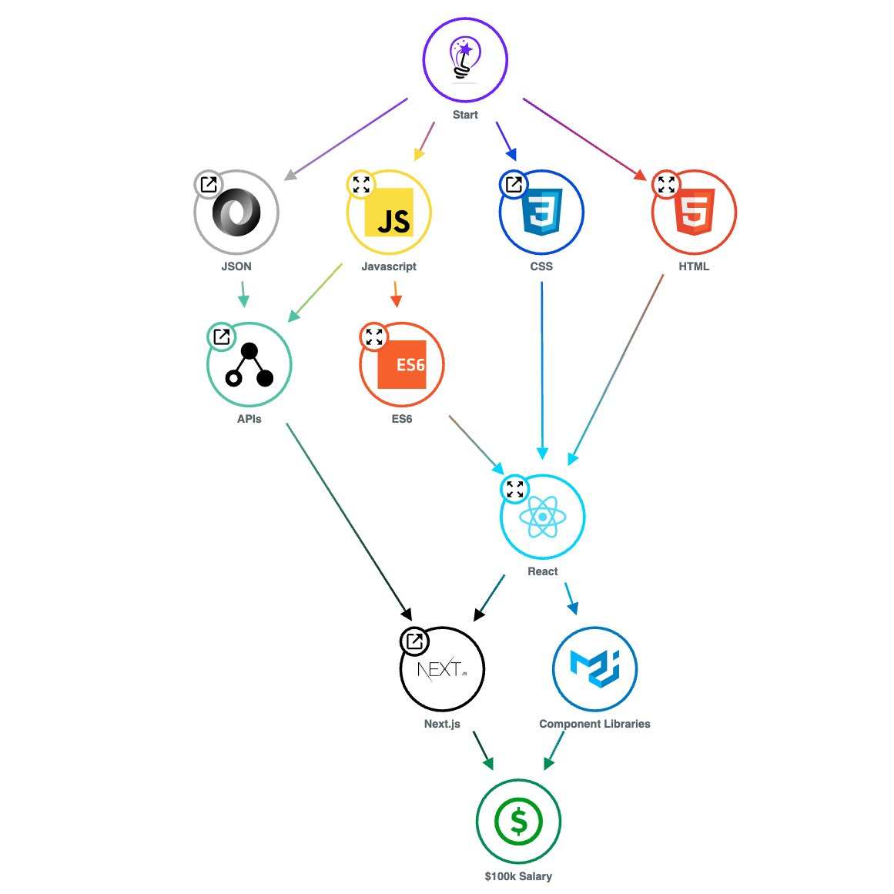

三種角色、一條光譜 —— 中間的「全端」把兩邊都收進來。

在現在 AI 時代、軟體做得很快的現在，兩個都要有基礎 —— 至少知道這些東西在幹嘛。
由左至右：先打基礎 → 選一條前端 / 後端的路 → 最後整合成完整產品。
一條網址，其實藏著「去哪裡、要什麼、怎麼要」的完整指令 —— 用顏色拆給你看。
| 區段 | 內容 | 意義 |
|---|---|---|
| 協定 | https:// | 用什麼方式溝通（加密的 HTTP） |
| 主機 | api.example.com | 要連到哪一台 server |
| 埠號 | :8080 | 連到 server 上的哪個門 |
| 路徑 | /users/42 | 要哪個資源（第 42 號用戶） |
| 查詢字串 | ?sort=asc&limit=10 | 附帶條件（排序、數量） |
| 片段 | #profile | 頁面內定位的位置 |
API＝前端與後端之間溝通的橋樑，負責搬運「資料流」。
以「一個人」來舉例 —— 一個人有各種數值，剛好就是一筆用戶資料。
{
"名字": "Rex",
"出生年月日": "1995-07-22",
"身高": 180,
"體重": 60
}我送出一句話的時候，可以想像網路世界中飛出了這樣一個 JSON。
{
"發送時間": "2026-06-04T14:30:05+08:00",
"發送者": "Rex",
"訊息內容": "hi 676767",
"發送對象": "Lawrence"
}每一次請求，後端都會回一組「狀態碼（Status Code）」告訴你結果。
200 OK — 成功202 Accepted — 已接受，處理中400 Bad Request — 請求格式錯誤404 Not Found — 找不到資源很多服務都開放公開 API —— 學會「讀」它，你就能直接拿別人的資料來用。以 Chess.com（西洋棋）查某位玩家的對局為例：
api.chess.com | 專門放 API 的主機 |
/pub | 公開資料（public） |
/player/ttdragon0722 | 哪一位玩家 |
/games/2026/05 | 2026 年 5 月的對局 |
api.chess.com/player/.../games/2026/05公開 API 直接把網址貼進瀏覽器就看得到 —— 不用先寫程式。
心法（上）：網址就是一句指令 —— 把路徑一段一段拆開，「它想給你什麼」大概就猜到一半了。
把上一頁的網址打開後，後端會回給你一包 JSON。重點不是「全部看懂」，而是抓出你要的欄位。
{
"games": [
{
"url": "chess.com/game/live/169..",
"time_class": "blitz",
"rated": true,
"white": {
"username": "ttdragon0722",
"rating": 322,
"result": "win"
},
"black": { ... }
}
]
}rating(分數)、result(勝負) 一看就懂games 陣列 [ ] —— 一筆筆對局white / black 底下還各包一個物件主題：做一個「虛構品牌的單頁官網」—— 手搖飲店、你最愛的遊戲 / 偶像、貓咪咖啡廳、個人作品集……主題自選，挑一個你有感覺的。
先把「必做」做完再碰加分；加分沒做不扣分，做了是亮點。
同一個 AI，會不會用差很多 —— 先學「怎麼開口」。給你一個起手式：
真的不知道怎麼寫？先請 AI 幫你「潤稿」，潤完再拿去生成 —— 永遠比亂寫好。
照這個節奏推進；卡住了先自救，再來問我。
我是你的除錯教練，不是代工 —— 我給你關鍵字和方向，code 你自己改。